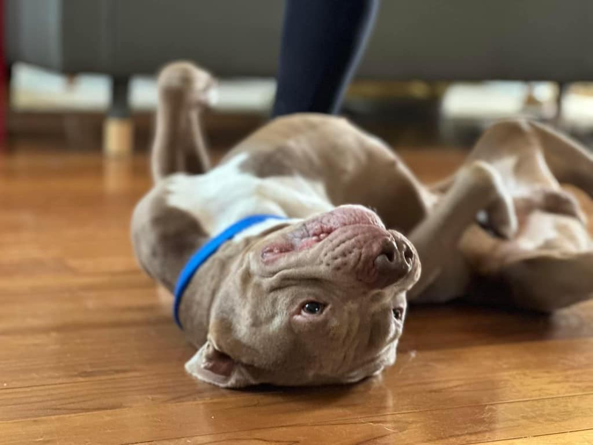

Foster me.
Give a rescue dog a safe, loving home until we find their perfect forever home.

What fostering looks like
We supply the essentials
We provide all necessary supplies, including food and a crate for the dog.
You help with vet trips
We ask fosters to help with transportation to required vetting appointments. Vetting can be done at any Texas Coalition for Animal Protection (TCAP) clinic. Find locations at texasforthem.org.
You get first right of refusal
Fosters get first right of refusal on adopting their foster dog. It's the best way to see if a dog is the perfect fit before you commit to forever.